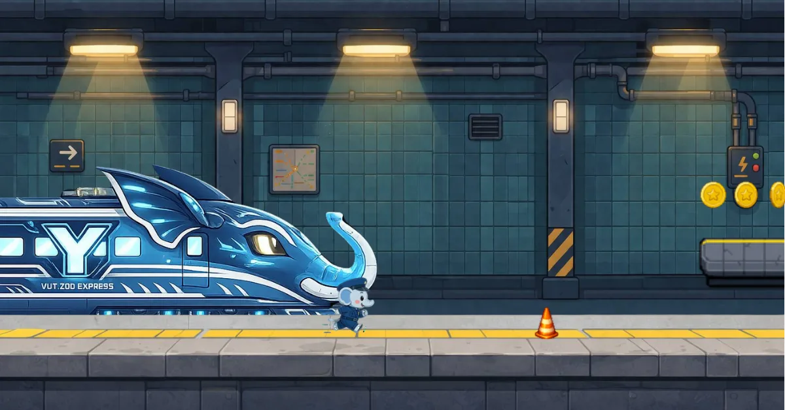

かんたん操作
タップでジャンプ。障害物、穴、敵を見分けてリズムよく進みます。
子ゾウの警備員ユキゾウが、コインと落とし物のなぞを追いかける2Dランゲーム。
Run the subway with Yukizo, a tiny station guard with a big case to solve.

横スクロールの地下鉄ステージを進みながら、障害物をジャンプでかわし、 コインやパワーアップを集めます。駅ごとに変わる背景とギミックが、短いプレイでも手応えを作ります。
Jump over hazards, grab coins, and keep Yukizo moving through lively subway stages built for quick mobile runs.
ユキゾウは小さな駅員見習い。じいじが残した手がかりを追って、神戸の地下鉄を駅から駅へ進みます。 なくし物、赤いしるし、あやしいネズミたち。走るたびに、物語が少しずつ動き出します。
Follow Grandpa's clues across subway stations and uncover the small mystery hiding under Yukizo's first patrol.
Quick action, warm character moments, and subway stages made for repeat runs.
タップでジャンプ。障害物、穴、敵を見分けてリズムよく進みます。
走りながらコインを集め、次のチャレンジへつながる楽しさを作ります。
新神戸、元町、三宮など、雰囲気の違う地下鉄ステージを巡ります。
小さな警備員ユキゾウが、じいじの手がかりを追って走ります。
Start Yukizo Dash on iPhone, iPad, or Android.